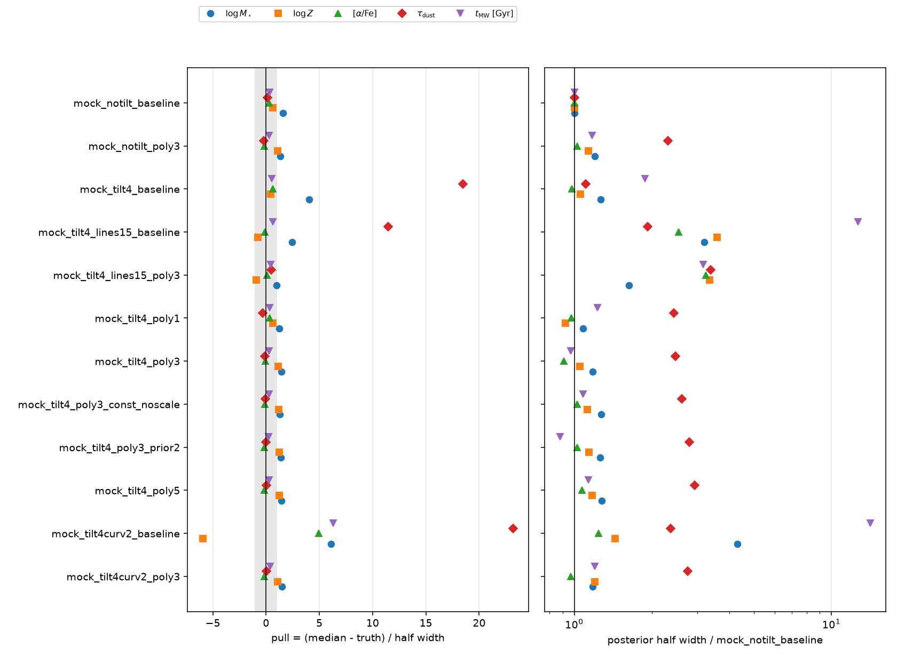
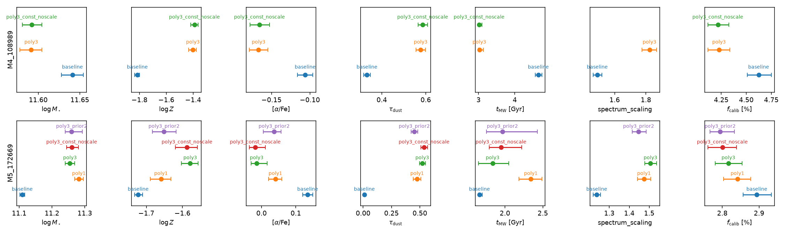
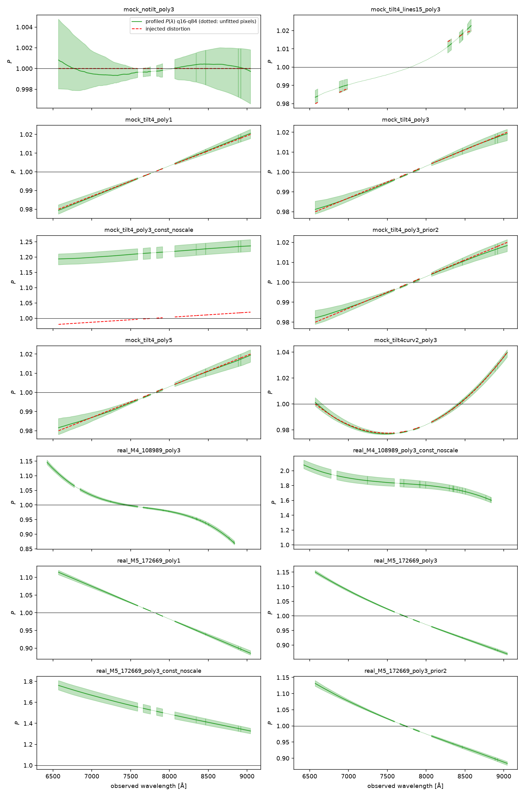
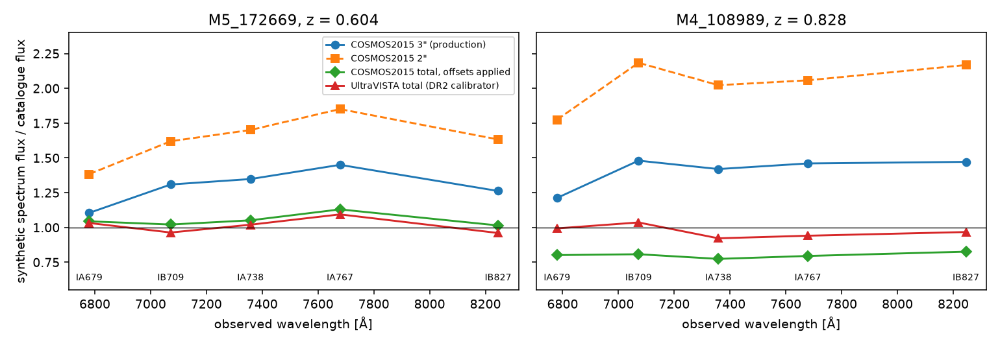
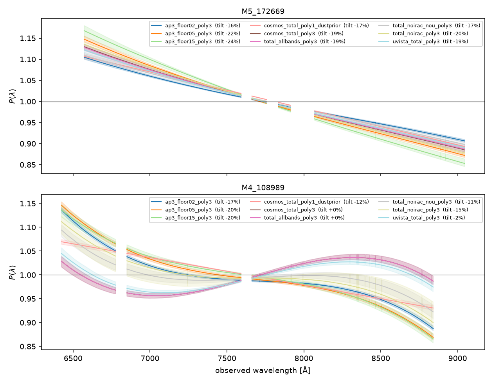
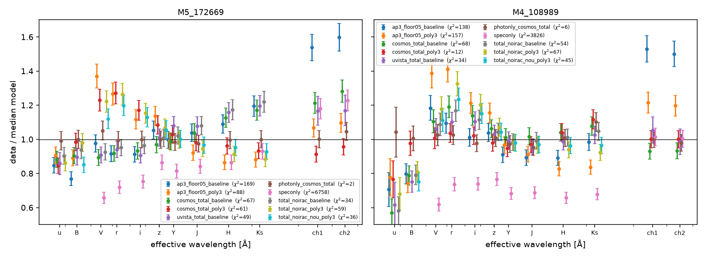
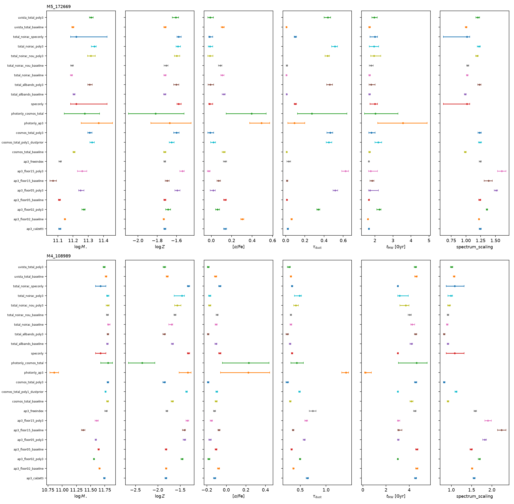

Ceridwen calibration polynomial
Draft. What a spectrophotometric calibration polynomial does, whether Ceridwen had one on the sampled path, the profiled Chebyshev implementation on branch calibration-polynomial, its measured effect on mocks and two LEGA-C DR2 targets, and where the 25 percent tilt between the LEGA-C continuum and the photometry-anchored model comes from.
What the polynomial does
A slit or fibre spectrum carries a smooth, wavelength-dependent flux-calibration error of a few percent: flux-standard and response errors, slit losses that change with seeing and wavelength, differential atmospheric refraction, and extraction or sky-subtraction residuals. Broadband photometry from imaging does not share these errors. In a joint fit the spectrum contributes thousands of pixels, so an uncorrected 2 to 4 percent tilt dominates the likelihood and pulls the stellar-population parameters.
Prospector's answer is a multiplicative spectrophotometric calibration vector: the model spectrum is multiplied by spec_norm × (1 + Σm≥1 am Tm(x)), a low-order Chebyshev polynomial in a wavelength coordinate x ∈ [−1, 1]. The photometry sets the absolute SED shape and normalisation; the polynomial absorbs the spectrum's smooth calibration error, and the spectrum keeps only its line and narrow-continuum information. The coefficients am are not sampled: because the model is linear in them, Prospector solves the weighted least-squares problem at every likelihood call (polyopt in PolySedModel.spec_calibration) and plugs the solution in (a profile likelihood). spec_norm is the scalar normalisation, sampled or fixed.

spectrum_scaling-only model would use.Liu Hao's reading, "this calibrates the spectroscopy/photometry mismatch", is right with one refinement: the polynomial calibrates the spectrum onto the photometry, never the reverse, and it removes only the smooth part of the mismatch. Absorption-line depths and widths are untouched because the polynomial cannot bend on the scale of a line. A pure scalar (spec_norm, Ceridwen's spectrum_scaling) removes the mean offset only; a tilt or curvature remains and is fitted by the stellar-population and dust parameters instead.
Ceridwen before this branch
Spectrum.fit_polynomial_calibration(ceridwen/observation/spectrum.py:1014-1078onmain) solved the same weighted least-squares Chebyshev fit in NumPy, but nothing in the package called it. Notebooks call it after a fit to draw a calibrated median model. It was dead code with respect to the likelihood.- The sampled path is
MultiObservationLikelihood.make_lnprobfn(ceridwen/likelihood/likelihood.py:875-932) →SedModel.predict(ceridwen/model/model.py:369) →CSPBasis._project_observations(ceridwen/csp/csp.py:1300-1418) →DiagonalNoiseModel.compute(ceridwen/likelihood/noise_model.py:283-368) →lnlike_diag_gaussian(likelihood.py:175-264). No polynomial anywhere on it. spectrum_scalingis Prospector'sspec_norm: a sampled scalar multiplied into theSpectrumprediction only (csp.py:1361-1362and1410-1416). The DR2 notebook gives it aClippedNormal(1, 0.3)prior and addslog_f_calib, a model-anchored fractional noise term of 1 to 10 percent that inflates the spectrum errors instead of correcting the shape.Spectrum.log_likelihood, the staticcalibration=vector,noise_floor, andsky(spectrum.py:875-1013) are not on the sampled path either; they serve GP and custom pipelines.
Implementation on the branch
ceridwen/likelihood/calibration.py adds PolynomialCalibration: a static Chebyshev basis built once from the pixel grid (the unmasked range maps to x ∈ [−1, 1]), a pure-JAX weighted least-squares solve on the normal equations at every call, an optional Gaussian prior on the coefficients (a ridge term plus its log-density), and a choice of whether the constant term is part of the basis. DiagonalGaussianLikelihood(calibration=...) replaces the model spectrum by P(x) × μ before the noise model and the Gaussian kernel, in both __call__ and the jitted factory. Absent, every existing fit is unchanged. The weights are the observational uncertainties, as in Prospector, so the solution is a deterministic function of θ and never feeds back through the model-anchored log_f_calib term.
ceridwen/likelihood/calibration.py · PolynomialCalibration.solve
safe_sigma = jnp.where(mask, jnp.asarray(sigma), 1.0)
# Whitened, masked design matrix and residual: rows outside the mask
# are exactly zero, so they drop out of the normal equations.
weight = jnp.where(mask, mu / safe_sigma, 0.0) # (n_pix,)
design = self.basis * weight[:, None] # (n_pix, k)
target = jnp.where(mask, (y - mu) / safe_sigma, 0.0) # (n_pix,)
normal = design.T @ design # (k, k)
rhs = design.T @ target # (k,)
if self.prior_sigma is not None:
normal = normal + jnp.eye(self.n_coeff) / self.prior_sigma ** 2
return jnp.linalg.solve(normal, rhs)Documented contract: "Weighted least-squares coefficients a of y ~= mu (1 + basis @ a). Pure JAX (jit/grad safe). Masked pixels carry zero weight. With a prior_sigma the normal equations get the ridge term I / prior_sigma**2."
Why it matters: the solve is a (k × k) system with k ≤ 5, so the polynomial costs one small matrix solve per likelihood call on top of the SED model, and no extra sampled dimensions.
Tests in tests/test_polynomial_calibration.py: exact recovery of an injected polynomial without noise, recovery to better than 1 percent at S/N 20, masked pixels excluded, the constant absorbed only with fit_constant, the prior shrinking the coefficients and adding the right penalty, the profile likelihood on tilted data matching the untilted likelihood, jit and gradient through make_lnprobfn, and recovery of a tilt through the alpha-enhanced forward model on the DR2 grid. Spectrum.fit_polynomial_calibration now calls the same kernel, so the post-hoc plot and the in-likelihood profile cannot disagree.
Experiment
scripts/calibration_polynomial_experiment.py reproduces the integrated notebook's full_spectrum joint fit (selection, observations, priors, transforms, 500 live points, 65 inner steps, 100 deletions, logZ_tol −5) and adds the switches. Mocks use M5_172669's pixel grid, uncertainties, masks, and filters; the truth is the weighted posterior median of the stored full-spectrum fit; the distortion 1 + (T/2) x + C T2(x) multiplies the spectrum only; one noise realisation with seed 20260902 is shared by every mock arm. All arms ran on one RTX 5060 Ti 16 GB in one boot.
Arms
Twenty fits: eleven mocks of M5_172669, two follow-up mocks, and seven fits of the two DR2 targets. baseline is the production configuration; polyN adds the profiled order-N polynomial with the constant fixed and spectrum_scaling kept; const_noscale lets the polynomial carry the normalisation and drops spectrum_scaling; prior2 adds a 2 percent Gaussian prior on every coefficient; lines15 fits only ±15 Å rest-frame windows around ten absorption lines.
Mock arms
Truth: log M⋆ = 11.110, log Z = -1.723, [α/Fe] = 0.136, τdust = 0.011, tMW [Gyr] = 1.657. Each cell is the pull (median − truth) / half width, then the half width relative to notilt_baseline in brackets. Pulls beyond ±1 are outside the 16–84 range.
| arm | pixels | log M⋆ | log Z | [α/Fe] | τdust | tMW [Gyr] | spectrum_scaling | fcalib [%] | P range | Δ ln Z | calls |
|---|---|---|---|---|---|---|---|---|---|---|---|
| notilt_baseline | 3602 | +1.58 [1.00] | +0.64 [1.00] | +0.29 [1.00] | +0.13 [1.00] | +0.34 [1.00] | 1.213 ± 0.019 | 1.00 ± 0.00 | — | +0.0 | 1,384,500 |
| notilt_poly3 | 3602 | +1.36 [1.20] | +1.09 [1.13] | -0.19 [1.03] | -0.22 [2.31] | +0.29 [1.17] | 1.214 ± 0.018 | 1.00 ± 0.00 | 0.999–1.001 | +5.1 | 1,274,000 |
| tilt4_baseline | 3602 | +4.06 [1.26] | +0.42 [1.05] | +0.65 [0.98] | +18.47 [1.10] | +0.53 [1.88] | 1.243 ± 0.022 | 1.00 ± 0.00 | — | -9.4 | 1,378,000 |
| tilt4_lines15_baseline | 453 | +2.46 [3.20] | -0.76 [3.59] | -0.14 [2.54] | +11.47 [1.93] | +0.64 [12.65] | 1.241 ± 0.015 | 1.01 ± 0.01 | — | -206571.3 | 1,274,000 |
| tilt4_lines15_poly3 | 453 | +1.00 [1.63] | -0.91 [3.35] | +0.08 [3.25] | +0.50 [3.39] | +0.43 [3.17] | 1.215 ± 0.018 | 1.01 ± 0.01 | 0.984–1.023 | -206554.2 | 1,098,500 |
| tilt4_poly1 | 3602 | +1.25 [1.08] | +0.64 [0.92] | +0.34 [0.97] | -0.29 [2.44] | +0.32 [1.23] | 1.216 ± 0.016 | 1.00 ± 0.00 | 0.979–1.021 | +4.0 | 1,306,500 |
| tilt4_poly3 | 3602 | +1.42 [1.18] | +1.16 [1.05] | -0.06 [0.91] | -0.10 [2.47] | +0.30 [0.97] | 1.213 ± 0.019 | 1.00 ± 0.00 | 0.981–1.019 | +6.8 | 1,248,000 |
| tilt4_poly3_const_noscale | 3602 | +1.30 [1.27] | +1.20 [1.12] | -0.10 [1.02] | -0.07 [2.62] | +0.31 [1.08] | — | 1.00 ± 0.00 | 1.194–1.237 | +13.4 | 1,059,500 |
| tilt4_poly3_prior2 | 3602 | +1.41 [1.26] | +1.24 [1.14] | -0.16 [1.02] | -0.03 [2.80] | +0.22 [0.88] | 1.211 ± 0.017 | 1.00 ± 0.00 | 0.982–1.018 | +4.3 | 1,306,500 |
| tilt4_poly5 | 3602 | +1.43 [1.28] | +1.26 [1.17] | -0.17 [1.07] | +0.04 [2.94] | +0.31 [1.13] | 1.211 ± 0.018 | 1.00 ± 0.00 | 0.982–1.019 | +6.5 | 1,254,500 |
| tilt4curv2_baseline | 3602 | +6.09 [4.31] | -5.93 [1.44] | +4.93 [1.24] | +23.18 [2.37] | +6.31 [14.15] | 1.491 ± 0.031 | 1.00 ± 0.00 | — | -645.7 | 2,528,500 |
| tilt4curv2_poly3 | 3602 | +1.47 [1.18] | +1.11 [1.20] | -0.17 [0.97] | +0.02 [2.76] | +0.37 [1.20] | 1.213 ± 0.017 | 1.00 ± 0.00 | 0.977–1.040 | +10.9 | 1,300,000 |
M4_108989 (z = 0.828, 3735 fitted pixels, catalogue S/N 21)
Median ± half of the 16–84 range. Δ ln Z is relative to the baseline arm.
| arm | log M⋆ | log Z | [α/Fe] | τdust | tMW [Gyr] | spectrum_scaling | fcalib [%] | P range | Δ ln Z | calls | wall [s] |
|---|---|---|---|---|---|---|---|---|---|---|---|
| baseline | 11.641 ± 0.013 | -1.816 ± 0.019 | -0.106 ± 0.010 | 0.333 ± 0.014 | 4.650 ± 0.095 | 1.489 ± 0.028 | 4.62 ± 0.12 | — | +0.0 ± 0.3 | 1,300,000 | 221 |
| poly3 | 11.591 ± 0.013 | -1.402 ± 0.029 | -0.167 ± 0.012 | 0.577 ± 0.021 | 3.022 ± 0.064 | 1.823 ± 0.046 | 4.23 ± 0.11 | 0.869–1.146 | +207.2 ± 0.4 | 1,313,000 | 345 |
| poly3_const_noscale | 11.592 ± 0.012 | -1.390 ± 0.028 | -0.166 ± 0.013 | 0.586 ± 0.021 | 3.015 ± 0.046 | — | 4.22 ± 0.10 | 1.601–2.077 | +211.5 ± 0.4 | 1,066,000 | 313 |
M5_172669 (z = 0.604, 3602 fitted pixels, catalogue S/N 105)
Median ± half of the 16–84 range. Δ ln Z is relative to the baseline arm.
| arm | log M⋆ | log Z | [α/Fe] | τdust | tMW [Gyr] | spectrum_scaling | fcalib [%] | P range | Δ ln Z | calls | wall [s] |
|---|---|---|---|---|---|---|---|---|---|---|---|
| baseline | 11.109 ± 0.007 | -1.722 ± 0.011 | 0.135 ± 0.015 | 0.012 ± 0.004 | 1.664 ± 0.024 | 1.237 ± 0.018 | 2.89 ± 0.04 | — | +0.0 ± 0.4 | 1,183,000 | 205 |
| poly1 | 11.282 ± 0.013 | -1.659 ± 0.029 | 0.040 ± 0.019 | 0.476 ± 0.034 | 2.342 ± 0.152 | 1.474 ± 0.033 | 2.84 ± 0.04 | 0.885–1.115 | +114.3 ± 0.4 | 1,384,500 | 276 |
| poly3 | 11.255 ± 0.014 | -1.579 ± 0.023 | -0.014 ± 0.023 | 0.521 ± 0.026 | 1.837 ± 0.200 | 1.506 ± 0.029 | 2.82 ± 0.04 | 0.870–1.150 | +128.3 ± 0.4 | 1,228,500 | 351 |
| poly3_const_noscale | 11.260 ± 0.018 | -1.587 ± 0.031 | -0.018 ± 0.023 | 0.537 ± 0.029 | 1.948 ± 0.214 | — | 2.80 ± 0.04 | 1.327–1.762 | +132.5 ± 0.4 | 1,046,500 | 306 |
| poly3_prior2 | 11.260 ± 0.026 | -1.651 ± 0.032 | 0.037 ± 0.026 | 0.451 ± 0.031 | 1.966 ± 0.336 | 1.447 ± 0.036 | 2.79 ± 0.03 | 0.884–1.131 | +103.6 ± 0.4 | 1,293,500 | 386 |
Reading the mock table
- Without a distortion the production setup recovers the truth (every pull within ±1.6). Adding an order-3 polynomial to undistorted data costs nothing in accuracy (
Pstays within 0.999–1.001) but widens the dust posterior by 2.3× and mass by 1.2×: the polynomial and diffuse dust both bend the continuum smoothly, so the spectrum loses most of its dust leverage and the photometry has to carry it. - A 4 percent end-to-end tilt is absorbed by the production setup with the wrong parameters: τdust moves from 0.011 to 0.083 (18 half widths), mass by +0.036 dex (4 half widths),
spectrum_scalingby +0.03; log Z, [α/Fe] and the age stay within one half width. ln Z drops by 9. - Orders 1, 3 and 5 all remove that bias (pulls within ±1.4, the recovered
Poverlays the injected line) with the same dust-width penalty; order 5 pays a little more width everywhere. Letting the polynomial carry the normalisation (fit_constant, nospectrum_scaling) gives the same parameters with one fewer sampled dimension and a recoveredPof 1.19–1.24, the injected 1.238 scale times the tilt. - A 4 percent tilt plus 2 percent curvature breaks the production setup: every parameter is off by 5 to 23 half widths, the age width grows 14×,
spectrum_scalingruns to 1.49 and ln Z drops by 646. The order-3 polynomial recovers the truth exactly as in the pure-tilt case. - Interaction with the absorption-line-mask experiment: with only ±15 Å rest-frame windows around ten standard lines (453 pixels, a simplified
dropmode of branchabsorption-mask), the tilt still biases dust by 11 half widths, because each window carries a local continuum slope. The polynomial removes it. The windows alone widen every posterior 2.5 to 13× (the age 13×); with the polynomial the age width is 3× the full-spectrum value. The two remedies are complementary, not alternatives, and the downweighted mode of that branch was not run here. - Cost: 0.28 ms per likelihood call with the order-3 polynomial against 0.18 ms without on the RTX 5060 Ti (the
(n_pix × k)products are not negligible next to this small model), so a production fit takes 5.5 rather than 4 minutes.
Reading the DR2 targets
- On both real spectra the free polynomial is not a few-percent correction. Its median runs from 1.15 at 6600 Å to 0.87 at 9000 Å on M5_172669 and from 1.10 to 0.87 on M4_108989, the same monotonic shape in the observed frame (correlation 0.97, rms difference 2.6 percent; in the rest frame the curves separate by 11 percent), which points at the instrument or the aperture rather than at rest-frame physics. Both DR2 spectra are also fainter than the photometry by a factor 1.24 to 1.49 (
spectrum_scaling). - The stellar-population parameters follow: M5_172669 moves from τdust = 0.012 to 0.52, +0.15 dex in mass, +0.14 in log Z, −0.15 in [α/Fe], and its age widens 8× (1.66 ± 0.02 to 1.84 ± 0.20 Gyr); M4_108989 moves from 4.65 ± 0.10 to 3.02 ± 0.06 Gyr in mass-weighted age, +0.4 in log Z and +0.24 in τdust. ln Z rises by 128 and 207.
- Where the gain comes from: at the maximum-likelihood sample of the production fit the twelve photometric bands give χ² = 166 (M5) and 138 (M4), with u and B 3–6σ low and the two IRAC bands 7σ high, while the spectrum reaches χ²/pixel = 1.06 only through the 3–5 percent
log_f_calibinflation (8.7 and 2.4 with the raw errors). With the polynomial the M5 photometry improves to χ² = 92 and the M4 spectrum to 2.25 raw. The photometry that is supposed to anchor the SED is therefore itself in tension with the model family before any polynomial enters, and a free polynomial hands the continuum shape entirely to that anchor. - Project synthesis: the polynomial behaves as designed (the mocks prove it), but on these data it exposes a 25 percent observed-frame mismatch between the LEGA-C continuum and the model fitted to COSMOS photometry. Whether that mismatch is the spectra's flux calibration (slit losses vary with wavelength and seeing), the aperture colour gradient between the 1″ slit and the 3″ photometry, or the model family (no dust emission, fixed dust slope, one stellar library) is not decided by this experiment; the next section settles it. Until then an unconstrained polynomial trades one systematic (a tilted continuum forcing τdust to zero) for another (dust, age and metallicity floating along a degeneracy that only the photometry closes).
Follow-up arms on M5_172669
- A Gaussian prior of 2 percent per coefficient (
prior_sigma = 0.02) does not restrain the polynomial:Pstill spans 0.88–1.13, ln Z is 104 above the baseline (25 below the free polynomial), τdust = 0.45, age 1.97 ± 0.34 Gyr. With 3,602 pixels the likelihood overwhelms any few-percent prior. - An order-1 polynomial (a pure tilt) gives the same picture:
P0.89–1.12, ln Z +114, τdust = 0.48, age 2.34 ± 0.15 Gyr. The mismatch is a tilt, not a wiggle. - On the mock, the same 2 percent prior changes nothing (pulls within ±1.4,
P0.98–1.02), so the prior is harmless where the calibration error really is a few percent.



Origin of the 25 percent tilt
Follow-up chosen by Liu Hao (option C): settle where the observed-frame tilt between the LEGA-C continuum and the model anchored to COSMOS photometry comes from before choosing the DR2 default. Three hypotheses were set against the release documentation, a model-independent comparison of each spectrum with four photometric SEDs, and 32 further fits.
What the LEGA-C DR2 documentation says
- The spectra are not calibrated with standard stars. ESO Phase 3 release description (
data/raw/legac_dr2/ESO_DR2_release_description.pdf, "Data Reduction and Calibration"): "Spectra are flux calibrated using the photometric SEDs from UltraVISTA. Best-fit spectral templates for these were obtained with FAST after updating with the spectroscopic redshifts and fit with a 5th order polynomial across the wavelength range of the LEGA-C spectra. Another 5th order polynomial is fit to the LEGA-C spectra and the ratio between the two is used to scale the LEGA-C spectra in a wavelength dependent way." Straatman et al. (2018, ApJS 239, 27) §2.3.2 step 10 repeats this sentence for sentence; §2.2: "We do not use spectrophotometric standards to flux-calibrate the spectra, but rather use the rich and well-calibrated photometric spectral energy distributions (SEDs) from the UltraVISTA catalog to derive the calibration." - Slit losses are compensated in the mean but not in colour. Same paragraph: "We note that the flux calibration compensates for slit losses assuming that the spectrum is the same in shape across the galaxy, but does not account for wavelength-dependent spatial gradients along the slit." Release description, "Known issues": "The resulting slit losses range from 10% to 40%. Since absolute flux calibrations are obtained from broadband photometry, such losses are mostly compensated for in the calibrated spectra. However, the accuracy of the flux calibration, typically 5% for individual galaxies, may be affected for some sample targets. Because galaxies have radial gradients in their spectral energy distribution, both the limited slit width capturing only a part of the galaxy, as well as slight slit misalignments, inevitably introduce wavelength-dependent calibration imperfections in a spectroscopic study."
- The aperture is a 1″ slit (Straatman et al. 2018 §3: "The instrumental resolution for a slit of width 1″ is R=2500 at 7500 Å"); the calibrating photometry is the Muzzin et al. (2013) catalogue, 2.1″ colour apertures on images PSF-matched to 1.0–1.2″ seeing, scaled to total by
FKstot / FKs. DR1 (van der Wel et al. 2016 §3.4.2) only normalised each spectrum to the i+ flux over 7000–8400 Å and promised "a new, wavelength-dependent flux calibration based on matching the shape of the spectrum to that of the full photometric spectroscopic energy distribution"; DR2 delivered it. DR3 (van der Wel et al. 2021 §2.3) keeps the method with a 5th-order Legendre polynomial, improved zero points, bagpipes templates and the BVrizYJ bands only. - Every DR2 spectrum header carries
FLUXCAL = 'ABSOLUTE',TOT_FLUX = F,FLUXERR = 10.andEXT_OBJ = T: absolute calibration, not asserted to be the total flux, 10 percent calibration uncertainty, extended object. No "scaled to photometry" flag, spectrophotometric correction vector or red-end throughput note is published; the catalogue'sTcoris a sample completeness weight, not a flux correction. - Ceridwen's DR2 path (
build_observationsinscripts/calibration_polynomial_experiment.py, the same code as the integrated notebook) readsFLUX,ERR,QUAL, converts units, masks emission lines and the A band, and applies no aperture or slit-loss scaling; the only calibration freedom is the sampled scalarspectrum_scalingand thelog_f_caliberror inflation. Nothing in theceridwenpackage references LEGA-C, apertures or slit losses.
Consequence: the continuum shape of a DR2 spectrum is, by construction, the shape of a FAST template fitted to the UltraVISTA total SED. A tilt against another photometric SED is therefore a difference between photometric catalogues, or between photometry and the model, not a property of the spectrograph.
The photometry the fits were anchored to
The integrated notebook and every fit so far use COSMOS2015 (Laigle et al. 2016) 3″ aperture fluxes for u through Ks, the catalogue's IRAC fluxes, and a 5 percent floor. Laigle et al. define three corrections that turn those columns into a consistent total SED, none of which was applied:
- an aperture-to-total offset per object (
Offset=MAG_AUTO − MAG_APER3): −0.209 mag for M5_172669 and −0.602 mag for M4_108989, so the 3″ apertures hold 83 and 57 percent of the light while the IRAC fluxes are total (IRACLEAN, §3.1.3); - Galactic extinction,
E(B-V)= 0.019 and 0.017 times a per-band factor from 4.66 (u) to 0.11 (4.5 µm); - per-band systematic zero-point offsets from their Table 3, "to be subtracted from the apparent magnitudes": +0.146 (B), −0.117 (V), −0.084 (z++), +0.055 (H), −0.194 (IA679), the rest within ±0.03.
scripts/download_legac_dr2_aperture_photometry.py fetches the 2″ and 3″ apertures, Offset and E(B-V) for every DR2 spectrum, and the Muzzin et al. (2013) UltraVISTA SED (the DR2 calibrator); --photometry cosmos_total applies the three corrections and --photometry uvista_total uses the calibrator itself.
Model-independent check inside the spectral range
Five COSMOS2015 intermediate bands (IA679, IB709, IA738, IA767, IB827) lie entirely inside the 6332–8900 Å coverage of both spectra, so synthetic fluxes from the DR2 spectrum can be divided by each catalogue's flux without any stellar-population model.

| target | photometric SED | IA679 | IB709 | IA738 | IA767 | IB827 | tilt IA679→IB827 |
|---|---|---|---|---|---|---|---|
| M5_172669 | COSMOS2015 3″ (production) | 1.105 | 1.309 | 1.348 | 1.450 | 1.262 | +14 % |
| COSMOS2015 2″ | 1.383 | 1.620 | 1.701 | 1.851 | 1.633 | +18 % | |
| COSMOS2015 total, offsets applied | 1.044 | 1.021 | 1.051 | 1.130 | 1.015 | −3 % | |
| UltraVISTA total (DR2 calibrator) | 1.032 | 0.964 | 1.020 | 1.094 | 0.960 | −7 % | |
| M4_108989 | COSMOS2015 3″ (production) | 1.212 | 1.480 | 1.420 | 1.460 | 1.472 | +21 % |
| COSMOS2015 2″ | 1.775 | 2.184 | 2.023 | 2.058 | 2.168 | +22 % | |
| COSMOS2015 total, offsets applied | 0.801 | 0.808 | 0.774 | 0.795 | 0.826 | +3 % | |
| UltraVISTA total (DR2 calibrator) | 0.993 | 1.036 | 0.922 | 0.941 | 0.967 | −3 % |
- Each spectrum reproduces the UltraVISTA total SED to within 4–8 percent rms with no trend, as the DR2 calibration guarantees; the corrected COSMOS2015 SED agrees in shape (tilt −3 to +3 percent) and, for M5_172669, in normalisation. For M4_108989 the corrected COSMOS2015 total is 20 percent brighter than the UltraVISTA total (
MAG_AUTOof a 1.2″ half-light-radius galaxy against a 2.5 Kron-radius aperture plus a stellar growth curve); that is a normalisation difference, not a tilt. - Against the production 3″ fluxes the spectrum is brighter by 1.26–1.45 (M5) and 1.42–1.48 (M4), the
spectrum_scalingvalues 1.24 and 1.49 the production fits sample, and IA679 sits 20 percent low in both galaxies: its −0.194 mag Table 3 offset. Without that band the 3″ ratios are flat to 4 percent, so the r–z aperture photometry itself carries little tilt; what it carries is the B, V and z++ zero-point offsets (14, 11 and 8 percent) and a 17–43 percent aperture-to-total inconsistency with the IRAC bands. - Aperture colour gradient: the 2″/3″ flux ratio of M5_172669 is 0.77–0.81 in every band from u to Ks (no gradient); for M4_108989 it rises from 0.59 (u) and 0.68 (r, i) to 0.71 (z) and 0.73 (Ks), a redder centre. A 1″ slit would therefore see a patch redder than the 3″ aperture by a few percent, the opposite sign to the polynomial's 22 percent, and the DR2 calibration removed that difference anyway by scaling the spectrum onto the total SED.
Fits: floor, photometry source, fit mode, dust law
Sixteen arms per target on one RTX 5070 each (same boot per target), production sampler settings, plus a seven-arm follow-up per target on a second boot that drops the IRAC bands and then also u from the corrected photometry. Tilt is P(8800 Å) / P(6600 Å) − 1 of the posterior-median polynomial; χ² is that of the twelve bands at the posterior-median model with the floor included. Records: results/tilt-origin-2026-09-02/ (arms.csv, analysis.ipynb, one directory per arm).
M5_172669 (z = 0.604, mass-weighted age 1.7 Gyr, S/N 105)
| arm | photometry | floor | τdust | tMW [Gyr] | log M⋆ | log Z | [α/Fe] | spectrum_scaling | χ²phot | tilt | Δ ln Z |
|---|---|---|---|---|---|---|---|---|---|---|---|
| baseline | 3″ (production) | 0.02 | 0.061 ± 0.008 | 1.61 ± 0.02 | 11.146 | −1.732 | 0.303 | 1.221 | 559 | — | −286 |
| poly3 | 3″ | 0.02 | 0.340 ± 0.016 | 2.25 ± 0.11 | 11.270 | −1.687 | 0.061 | 1.356 | 294 | −16 % | −4 |
| baseline | 3″ | 0.05 | 0.012 ± 0.005 | 1.67 ± 0.03 | 11.110 | −1.723 | 0.134 | 1.236 | 169 | — | 0 |
| poly3 | 3″ | 0.05 | 0.514 ± 0.025 | 1.73 ± 0.28 | 11.249 | −1.593 | 0.019 | 1.513 | 88 | −22 % | +128 |
| baseline | 3″ | 0.15 | 0.015 ± 0.007 | 1.85 ± 0.11 | 11.067 | −1.696 | 0.072 | 1.386 | 41 | — | +71 |
| poly3 | 3″ | 0.15 | 0.623 ± 0.035 | 1.76 ± 0.25 | 11.259 | −1.539 | −0.025 | 1.609 | 13 | −24 % | +162 |
| free dust slope | 3″ | 0.05 | 0.031 ± 0.019 | 1.66 ± 0.02 | 11.116 | −1.723 | 0.134 | 1.243 | 166 | — | +1 |
| Calzetti | 3″ | 0.05 | 0.022 ± 0.008 | 1.67 ± 0.03 | 11.113 | −1.722 | 0.135 | 1.242 | 168 | — | +1 |
| baseline | COSMOS2015 total | 0.05 | 0.010 ± 0.005 | 1.68 ± 0.05 | 11.206 | −1.723 | 0.122 | 0.988 | 67 | — | +53 |
| poly3 | COSMOS2015 total | 0.05 | 0.464 ± 0.031 | 1.80 ± 0.18 | 11.309 | −1.600 | −0.012 | 1.233 | 61 | −20 % | +139 |
| poly1 + dust prior 0.27 ± 0.26 | COSMOS2015 total | 0.05 | 0.450 ± 0.029 | 2.18 ± 0.19 | 11.325 | −1.650 | 0.022 | 1.237 | 58 | −17 % | +137 |
| baseline | UltraVISTA total | 0.05 | 0.008 ± 0.005 | 1.69 ± 0.05 | 11.198 | −1.719 | 0.113 | 1.004 | 49 | — | +62 |
| poly3 | UltraVISTA total | 0.05 | 0.438 ± 0.034 | 1.96 ± 0.15 | 11.319 | −1.608 | −0.011 | 1.201 | 57 | −19 % | +138 |
| photometry only | 3″ | 0.05 | 0.091 ± 0.088 | 3.55 ± 1.37 | 11.368 | −1.670 | 0.491 | — | 36 | — | — |
| photometry only | COSMOS2015 total | 0.05 | 0.274 ± 0.258 | 2.03 ± 0.93 | 11.277 | −1.816 | 0.395 | — | 2 | — | — |
| spectrum only | — | — | 0.098 ± 0.012 | 2.00 ± 0.21 | 11.22 ± 0.12 | −1.576 | −0.015 | 1.02 ± 0.23 | — | — | — |
M4_108989 (z = 0.828, mass-weighted age 4.6 Gyr, S/N 21)
| arm | photometry | floor | τdust | tMW [Gyr] | log M⋆ | log Z | [α/Fe] | spectrum_scaling | χ²phot | tilt | Δ ln Z |
|---|---|---|---|---|---|---|---|---|---|---|---|
| baseline | 3″ (production) | 0.02 | 0.367 ± 0.011 | 4.64 ± 0.10 | 11.657 | −1.812 | −0.079 | 1.512 | 686 | — | −267 |
| poly3 | 3″ | 0.02 | 0.497 ± 0.015 | 3.01 ± 0.03 | 11.559 | −1.458 | −0.180 | 1.695 | 610 | −18 % | −27 |
| baseline | 3″ | 0.05 | 0.333 ± 0.014 | 4.65 ± 0.10 | 11.641 | −1.816 | −0.106 | 1.489 | 138 | — | 0 |
| poly3 | 3″ | 0.05 | 0.577 ± 0.021 | 3.02 ± 0.06 | 11.591 | −1.402 | −0.167 | 1.823 | 157 | −20 % | +207 |
| baseline | 3″ | 0.15 | 0.361 ± 0.015 | 3.09 ± 0.18 | 11.366 | −1.406 | −0.076 | 2.234 | 126 | — | +88 |
| poly3 | 3″ | 0.15 | 0.613 ± 0.028 | 3.04 ± 0.10 | 11.609 | −1.338 | −0.153 | 1.901 | 27 | −20 % | +264 |
| free dust slope | 3″ | 0.05 | 0.745 ± 0.066 | 4.49 ± 0.11 | 11.773 | −1.800 | −0.121 | 1.590 | 72 | — | +14 |
| Calzetti | 3″ | 0.05 | 0.638 ± 0.024 | 4.54 ± 0.09 | 11.742 | −1.820 | −0.119 | 1.559 | 81 | — | +11 |
| baseline | COSMOS2015 total | 0.05 | 0.306 ± 0.016 | 4.19 ± 0.13 | 11.798 | −1.676 | −0.105 | 0.917 | 68 | — | +59 |
| poly3 | COSMOS2015 total | 0.05 | 0.246 ± 0.025 | 4.56 ± 0.10 | 11.804 | −1.856 | −0.187 | 0.824 | 12 | +0.4 % | +243 |
| poly1 + dust prior 0.43 ± 0.12 | COSMOS2015 total | 0.05 | 0.485 ± 0.018 | 3.01 ± 0.04 | 11.762 | −1.357 | −0.097 | 1.118 | 172 | −12 % | +101 |
| baseline | UltraVISTA total | 0.05 | 0.320 ± 0.014 | 4.59 ± 0.11 | 11.773 | −1.792 | −0.109 | 1.071 | 34 | — | +55 |
| poly3 | UltraVISTA total | 0.05 | 0.281 ± 0.030 | 4.53 ± 0.11 | 11.738 | −1.854 | −0.186 | 1.009 | 11 | −2 % | +241 |
| photometry only | 3″ | 0.05 | 1.384 ± 0.067 | 0.23 ± 0.30 | 10.858 | −1.329 | 0.225 | — | 69 | — | — |
| photometry only | COSMOS2015 total | 0.05 | 0.431 ± 0.119 | 4.64 ± 1.24 | 11.809 | −2.351 | 0.228 | — | 6 | — | — |
| spectrum only | — | — | 0.339 ± 0.014 | 3.00 ± 0.04 | 11.68 ± 0.09 | −1.317 | −0.068 | 1.09 ± 0.22 | — | — | — |
Follow-up: bands left out of the corrected photometry (second boot per target)
| target | bands | arm | τdust | tMW [Gyr] | χ²phot / bands | tilt | Δ ln Z vs same-band baseline |
|---|---|---|---|---|---|---|---|
| M5_172669 | all twelve | baseline | 0.010 ± 0.005 | 1.68 ± 0.05 | 67 / 12 | — | 0 |
| poly3 | 0.459 ± 0.030 | 1.80 ± 0.17 | 58 / 12 | −19 % | +86 | ||
| no IRAC | baseline | 0.007 ± 0.005 | 1.69 ± 0.05 | 34 / 10 | — | 0 | |
| poly3 | 0.512 ± 0.031 | 1.95 ± 0.26 | 59 / 10 | −20 % | +74 | ||
| no IRAC, no u | baseline | 0.012 ± 0.008 | 1.78 ± 0.11 | 41 / 9 | — | 0 | |
| poly3 | 0.437 ± 0.023 | 1.95 ± 0.28 | 36 / 9 | −17 % | +78 | ||
| M4_108989 | all twelve | baseline | 0.304 ± 0.016 | 4.18 ± 0.12 | 67 / 12 | — | 0 |
| poly3 | 0.246 ± 0.025 | 4.56 ± 0.10 | 12 / 12 | +0.4 % | +184 | ||
| no IRAC | baseline | 0.316 ± 0.018 | 4.25 ± 0.18 | 54 / 10 | — | 0 | |
| poly3 | 0.488 ± 0.069 | 3.17 ± 0.46 | 67 / 10 | −15 % | +182 | ||
| no IRAC, no u | baseline | 0.317 ± 0.015 | 4.05 ± 0.14 | 70 / 9 | — | 0 | |
| poly3 | 0.414 ± 0.046 | 3.70 ± 0.40 | 45 / 9 | −11 % | +167 |



Reading the fits
- The tilt is the dust the sampler adds, expressed in flux. On M5_172669 the polynomial tilt follows τdust arm by arm: −16 percent at τ = 0.34 (floor 0.02), −20 at 0.46, −22 at 0.51, −24 at 0.62 (floor 0.15). The Kriek & Conroy curve with slope −0.7 dims rest-frame 4100 Å against 5500 Å by 0.46 optical depths per unit τ, so τ ≈ 0.46 is a 19 percent tilt over the LEGA-C range: the polynomial and the diffuse dust are the same degree of freedom on the spectrum, as the ceridwen author noted, and once the polynomial is free the spectrum stops constraining dust at all (τ half width 0.005 → 0.03 with the polynomial, 0.26 from the photometry alone).
- The floor does not decide it. Loud photometry (0.02) shrinks the M5 tilt to −16 percent and quiet photometry (0.15) grows it to −24; the M4 tilt on the 3″ photometry is −18 to −20 percent at every floor. A floor of 0.15 also lets the M4 baseline wander to the 3 Gyr solution with
spectrum_scaling2.2, so quieter photometry is not a remedy. - Correcting the photometry removes the tilt for the old galaxy and the normalisation offset for both. With the Laigle et al. total SED,
spectrum_scalingis 0.99 and 0.92 instead of 1.24 and 1.49, the photometry χ² falls from 169/138 to 67/68 without a polynomial, and for M4_108989 the polynomial becomes flat (+0.4 percent; UltraVISTA −2 percent) with χ² = 12 for twelve bands and τdust = 0.25 ± 0.03 against 0.58 on the 3″ photometry. The previous job's 1.6 Gyr age shift on M4 (4.65 → 3.02 Gyr) was the photometry defect: the corrected-photometry polynomial fit gives 4.56 ± 0.10 Gyr. - For the young galaxy the residual is the model family's optical–NIR colour at the line-based solution. With corrected photometry the photometry alone is fit to χ² = 2 (twelve bands), but at the spectrum's own solution (tMW 1.7–2.0 Gyr, log Z −1.6 to −1.7, [α/Fe] ≈ 0) the model overshoots u (rest 2300 Å) by 12–15 percent and undershoots the IRAC bands (rest 2.2–2.8 µm) by 20–28 percent, a monotonic run from 0.88 (u) to 1.28 (4.5 µm) in data/model. The sampler answers with dust (τ 0.46), the polynomial absorbs the resulting −20 percent, and V to i end up 17–27 percent too faint (χ² 61). The 4.6 Gyr galaxy shows no IRAC deficit and only the u/B overshoot (data/model 0.57–0.62 in u), which the corrected-photometry polynomial fit resolves by moving to log Z −1.86, [α/Fe] −0.19. The follow-up shows the run is not confined to the ends: with u and IRAC removed the spectrum-anchored model still climbs from 0.85 (B) to 1.22 (Ks). A NIR excess of 20–30 percent at 1–2 Gyr and none at 4–5 Gyr is the signature of the thermally pulsing AGB light that the MIST/C3K grid carries lightly (no circumstellar AGB dust either), and the rest-UV overshoot sits where the UV upturn and the metal-line blanketing of the C3K library are least tested; a line-based age that is too young would produce the same pattern, and two galaxies cannot separate the two.
- Alternative attenuation laws do not help. A free Kriek & Conroy slope (0.26 ± 0.37 on M5, 0.14 ± 0.07 on M4) and Calzetti change ln Z by at most 14 on the 3″ photometry and leave the u/IRAC residuals; on M4 they buy a lower χ² with τ 0.64–0.75. A second stellar library was not run: the only other local grid (
mist_bpass_v2) has no [α/Fe] axis and would need the plainCSPBasis, a different model. - Spectrum only. Without photometry M5 prefers τ = 0.10, tMW 2.0 Gyr and M4 the 3.0 Gyr, log Z −1.32 solution; neither constrains the mass (half width 0.1 dex) nor the u band (the M5 spectrum-only model over-predicts u by 5×). The 4.6 Gyr / log Z −1.85 solution of M4 is chosen by the photometry (Δ ln Z +140 against the 3 Gyr solution once the corrected photometry is in), so the age–metallicity degeneracy of a S/N 21 spectrum is broken by the SED, not by the lines.
Hypotheses
| hypothesis | prediction | what the data show | verdict |
|---|---|---|---|
| (a) LEGA-C flux calibration or slit loss | The spectrum's continuum differs in shape from the photometry it was calibrated to; the release notes describe a residual throughput trend. | DR2 spectra are calibrated by a 5th-order polynomial onto the FAST template of the UltraVISTA total SED; both spectra reproduce that SED in the five intermediate bands to 4–8 percent rms with no trend, and sit at total flux (spectrum_scaling 0.99–1.07 against total SEDs). No throughput trend or correction vector is published. | excluded as the origin; the calibration is what makes the spectrum's continuum a template shape |
| (b) Aperture colour gradient (1″ slit against 3″ photometry) | The 2″/3″ flux ratio changes with wavelength and the slit sees a redder or bluer patch than the aperture by the size of the tilt. | 2″/3″ ratio flat at 0.77–0.81 for M5_172669; 0.59 (u) to 0.73 (Ks) for M4_108989, a redder centre. A 1″ patch would be a few percent redder than 3″, the opposite sign to the −20 percent polynomial, and the DR2 calibration scaled the slit spectrum onto the total SED anyway. | excluded |
| (b′) Photometry assembled inconsistently (3″ aperture optical/NIR with total IRAC, no aperture-to-total, extinction or zero-point offsets) | Correcting the photometry removes the 1.24–1.49 normalisation offset and most of the photometric χ², and the tilt if it comes from the photometry. | spectrum_scaling → 0.99 / 0.92, χ² 169/138 → 67/68 (baseline), photometry-only χ² 36/69 → 2/6. Tilt −20 → +0.4 percent for M4_108989; −22 → −20 percent for M5_172669. | confirmed; the whole tilt for the 4.6 Gyr galaxy, the normalisation for both |
| (c) Model family cannot reconcile spectrum and full SED | Even with consistent photometry the joint fit leaves structured residuals at the same bands with every floor, law and photometry source; removing those bands removes the tilt. | M5_172669: u 12–15 percent too bright and IRAC 20–28 percent too faint at the spectrum's solution; tilt = the dust added to fix it (−16 to −24 percent, tracking τ); Calzetti and a free slope do not change it. Leaving out the IRAC bands, then also u, changes nothing for M5_172669 (tilt −20 and −17 percent, τ 0.51 and 0.44): the spectrum-anchored model runs from 0.85 (B) to 1.22 (Ks) in data/model, so the whole optical–NIR colour, not only the ends, is 0.3 mag too blue at the line-based solution. For M4_108989 the IRAC bands hold the 4.6 Gyr solution; without them the polynomial fit drifts to 3.2–3.7 Gyr with τ 0.41–0.49 and an −11 to −15 percent tilt. | confirmed for the 1.7 Gyr galaxy; the tilt is the dust–polynomial degeneracy driven by a 0.3 mag B−Ks mismatch between the model at the line-based solution and the photometry |
Recommended DR2 default
Neither A nor B as run. Both were fitted to a defective photometric SED, and B in addition treats the DR2 continuum shape as data when it is a BC03/FAST template shape by construction (the calibration multiplies the raw spectrum by the ratio of two 5th-order polynomials, one of them fitted to the template). Recommended:
- Photometry:
--photometry cosmos_total(Laigle et al. aperture-to-total offset, Galactic extinction, Table 3 zero points), or the UltraVISTA total SED, never the 3″ fluxes. This alone changes log M⋆ by +0.10 to +0.16 dex, fixesspectrum_scalingat 1, and removes the 1.6 Gyr age swing on M4_108989. - Polynomial on (order 3, constant fixed,
spectrum_scalingkept): the DR2 continuum carries no information beyond the photometry and one template, so the fit should not let it set dust. With it, M4_108989 gives χ² = 12 for twelve bands, P flat, and Δ ln Z +243. - Keep all twelve bands and let the photometry set the dust. Dropping IRAC and u did not remove the M5 tilt (−17 to −20 percent) and let M4 drift toward the 3 Gyr solution. The price for the young galaxy is explicit: τdust 0.46 ± 0.03 instead of 0.01 ± 0.005, tMW 1.80 ± 0.18 instead of 1.68 ± 0.05 Gyr, log Z +0.12, [α/Fe] −0.13; whether that is a bias or the removal of one cannot be told from two galaxies, because the alternative (B) trusts a BC03 template continuum instead. A photometry-only dust prior does not substitute for this: the poly1 + prior arms took the 0.27 ± 0.26 and 0.43 ± 0.12 priors and still landed at τ 0.45 (M5) and 0.49 with the 3 Gyr solution (M4, χ² 172).
Dust degeneracy per option, both targets (posterior median ± half width; shift relative to the corrected-photometry fit without polynomial):
| option | M5 τdust | M5 tMW [Gyr] | M4 τdust | M4 tMW [Gyr] |
|---|---|---|---|---|
| B: production (3″, no polynomial) | 0.012 ± 0.005 (+0.00) | 1.67 ± 0.03 | 0.333 ± 0.014 (+0.03) | 4.65 ± 0.10 |
| A: 3″ + order-3 polynomial | 0.514 ± 0.025 (+0.50) | 1.73 ± 0.28 | 0.577 ± 0.021 (+0.27) | 3.02 ± 0.06 |
| corrected photometry, no polynomial | 0.010 ± 0.005 | 1.68 ± 0.05 | 0.306 ± 0.016 | 4.19 ± 0.13 |
| corrected photometry + order-3 polynomial | 0.464 ± 0.031 (+0.45) | 1.80 ± 0.18 | 0.246 ± 0.025 (−0.06) | 4.56 ± 0.10 |
| corrected + order-1 polynomial + photometric dust prior | 0.450 ± 0.029 (+0.44) | 2.18 ± 0.19 | 0.485 ± 0.018 (+0.18) | 3.01 ± 0.04 |
| corrected, no IRAC + order-3 polynomial | 0.512 ± 0.031 (+0.50) | 1.95 ± 0.26 | 0.488 ± 0.069 (+0.18) | 3.17 ± 0.46 |
| corrected, no IRAC, no u + order-3 polynomial | 0.437 ± 0.023 (+0.43) | 1.95 ± 0.28 | 0.414 ± 0.046 (+0.11) | 3.70 ± 0.40 |
What is left for Liu Hao: accept the corrected-photometry polynomial default for the 187-galaxy sample, and decide whether the 0.3 mag optical–NIR mismatch of the young galaxy is to be chased first (the AGB circumstellar-dust grid ceridwen ships in dust/AGBDustShell.py, a TP-AGB-heavier library, or a mock test of whether Balmer-line ages of 1–2 Gyr populations come out too young) or documented as a known systematic of the model family at tMW < 2 Gyr.
Records: results/tilt-origin-2026-09-02/ (per-arm ceridwen_result.h5, summary.json, vectors.npz; arms.csv; analysis.ipynb executed with corner plots, SFH histories and the figures above; vast_run_*.json with spend). Code: branch calibration-polynomial, scripts/calibration_polynomial_experiment.py (--photometry, --phot-floor, --fit, --drop-bands, --dust-law, --free-dust-index, --dust-prior), scripts/download_legac_dr2_aperture_photometry.py, scripts/tilt_origin_runner.py, scripts/tilt_origin_vast.py.